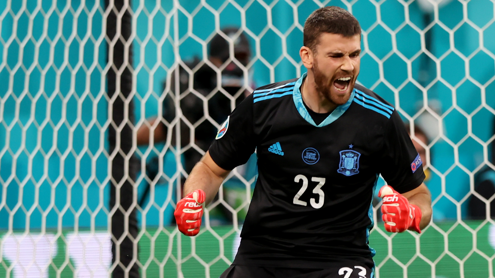
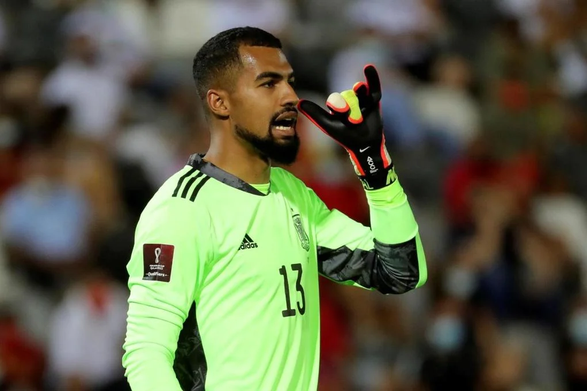
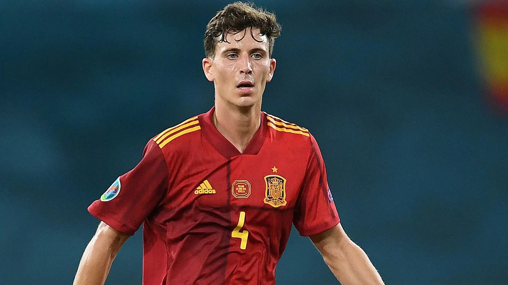
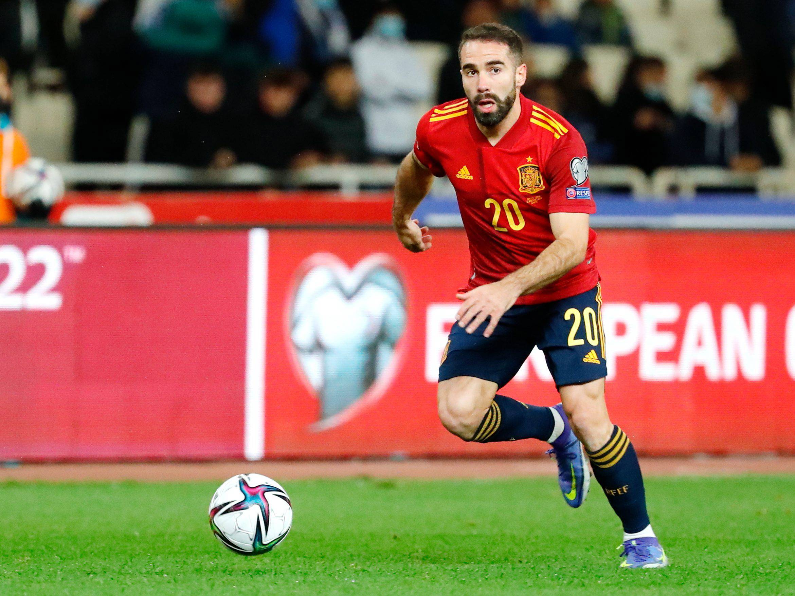
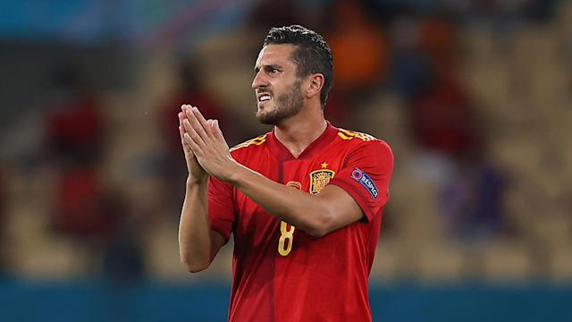
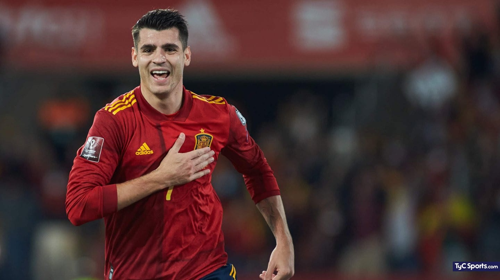
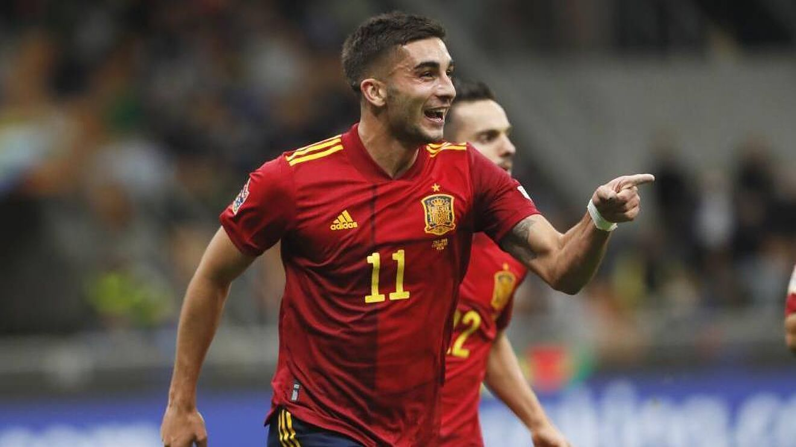

LISTA CONVOCATORIA LUIS ENRIQUE
Portería
Unai Simón

• Posición: Portero
• Edad: 25 años
• Número: 23
• Partidos jugados: 27
• Goles recibidos: 26
• Club profesional: Athletic Club
Robert Sánchez

• Posición: Portero
• Edad: 24 años
• Número: 13
• Partidos jugados: 1
• Goles recibidos: 0
• Club profesional: Brighton & Hove Albion F.C.
Defensa
Pau Torres

• Posición: Defensa Central
• Edad: 25 años
• Número: 4
• Partidos jugados: 21
• Goles marcados: 1
• Club profesional: Villarreal C.F.
Dani Carvajal

• Posición: Lateral Derecho
• Edad: 30 años
• Número: 20
• Partidos jugados: 30
• Goles marcados: 0
• Club profesional: Real Madrid C.F.
Medio Campo
Sergio Busquets
.webp)
• Posición: Centrocampista Defensivo
• Edad: 34 años
• Número: 5
• Partidos jugados: 139
• Goles marcados: 2
• Club profesional: F.C. Barcelona
Koke

• Posición: Centrocampista
• Edad: 30 años
• Número: 8
• Partidos jugados: 67
• Goles marcados: 0
• Club profesional: Atletico de Madrid
Delantera
Álvaro Morata

• Posición: Delantero Centro
• Edad: 29 años
• Número: 7
• Partidos jugados: 57
• Goles marcados: 27
• Club profesional: Atletico de Madrid
Ferran Torres

• Posición: Extremo Izquierdo
• Edad: 22 años
• Número: 11
• Partidos jugados: 30
• Goles marcados: 13
• Club profesional: F.C. Barcelona
Convocatoria de la Real Federación Española de Fútbol